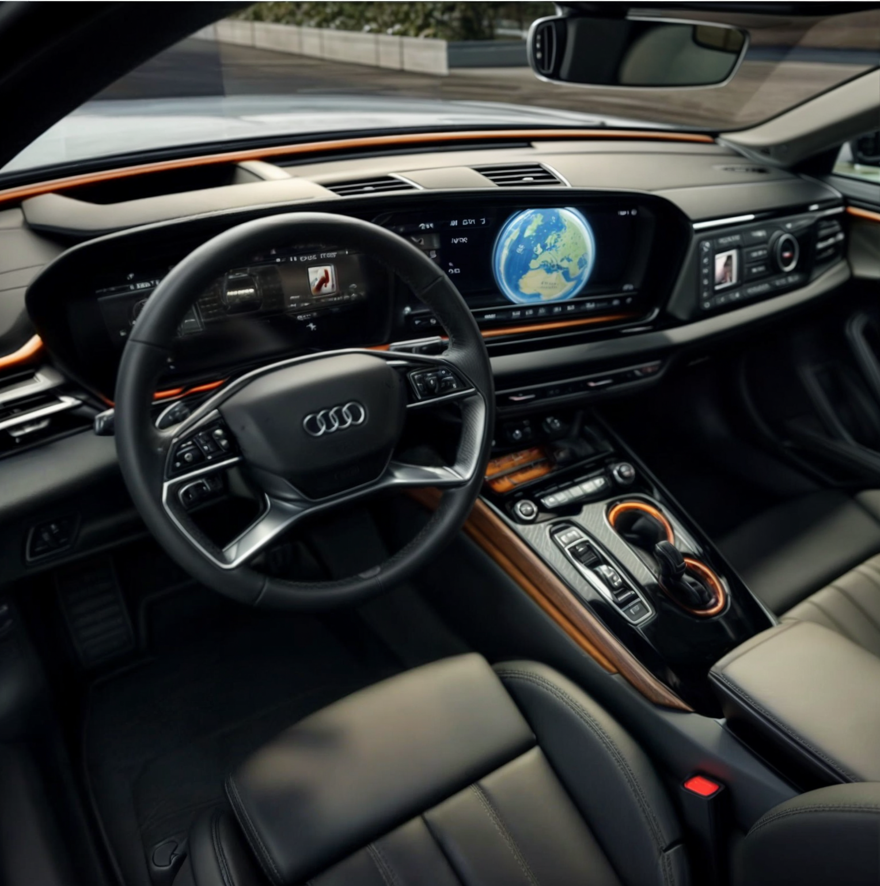

💻 De nieuwe Audi A5 Avant
Dertig jaar na de eerste A4 treedt de Audi A5 in zijn voetsporen. Maak kennis met de Audi A5 Avant.
Dit nieuwe model zet op alle fronten een hogere standaard. De nieuwe Audi A5 Avant heeft een sterke
persoonlijkheid.
Hij is sportief, stijlvol en praktisch. Met zijn krachtige uitstraling, strakke interieur en moderne
aandrijflijnen is
de Audi A5 Avant de ideale auto voor dit tijdperk.
Van Audi mag u de modernste aandrijftechnologie verwachten en de nieuwe A5 Avant maakt dit waar.
De TFSI-motoren onderstrepen hun hightech-karakter met de rijdynamische settings van Audi drive select,
energiebesparende mHEV plus-techniek en naar wens quattro-vierwielaandrijving.
Een naadloze gebruikersinterface
In uw nieuwe Audi werkt alles vanzelfsprekend, of dat nu de informatievoorziening of het entertainment is. Noviteiten als de handige Audi assistant, het MMI-panoramascherm, het optionele head-up display, optionele interactielicht en optionele MMI-bijrijdersscherm tillen het bedieningscomfort naar een nieuw niveau.
hello there audio